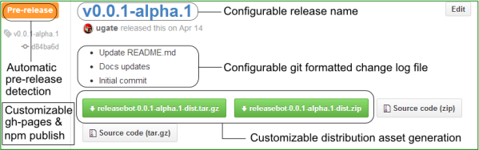

releasebot is a Grunt task for triggering an automated release process when a commit message matches a predefined regular expression. The commit message that triggers the automated release process can also be specified rather than extracted from a commit message. The task performs the following actions:
† Performed when only when release is triggered
● GitHub only
♠ Optional
♥ Failure will result in the following default roll back sequence (additional roll back strategies):

Each commit message will be checked for the presence of a version to release. The default expression checks for release v followed by a semantic compliant version or a + or * within the appropriate version slot indicating the version should be either incremented by one or that the value should be replaced by the last/currently released version (respectively).
The commit message below will result in a release of version 1.0.0 (surrounding text will be ignored):
This is Release v1.0.0 of my app
To release version 0.0.1-alpha.1 when no prior releases have been made:
release v*.*.+-alpha.+
To release version 1.0.2 when the latest release is 1.0.0:
release v*.*.2
To release version 1.0.1 when the latest release is 1.0.0:
release v*.*.+
To release version 1.2.1 when the latest release is 1.0.0:
release v*.++.+
To release version 2.0.0 when the latest release is 1.1.1:
release v+.0.0
To release version 0.0.1-beta.1 when the latest release is 0.0.1-alpha.3:
release v*.*.*-+.1
To release version 2.0.0 when the latest release is 1.1.1 via the grunt cli:
grunt releasebot --releasebot.commitMessage="Release v+.0.0"
In all of the prior usage examples the version is incremented on the package once the release successfully completes (optional). First, the bump version expression is used against the commit message to determine what the next version will be. If it cannot find a bump version it will auto-increment the current release version by one and use that value as the next release version.
To release version 1.1.0 when the latest release is 1.0.0 (next version is auto-incremented to 1.1.1)
release v*.+.0
To release version 1.1.1-beta.1 when the latest release is 1.1.0 (next version is auto-incremented to 1.1.1-beta.2)
release v*.*.+-beta.1
To release version 1.1.1-beta.1 when the latest release is 1.1.0 and explicitly set the next version to 1.1.1-rc.1
release v*.*.+-beta.1 bump v*.*.*-rc.*
As you can see the release version use of * and + is relative to the last/currently released version. In contrast, the bump version use of * and + is based upon the version that's being released.
If you haven't used Grunt before, be sure to check out the Getting Started guide, as it explains how to create a Gruntfile as well as install and use Grunt plugins. Once you're familiar with that process, you may install this plugin with this command:
npm install releasebot --save-dev
Once the plugin has been installed, it may be enabled inside your Gruntfile with this line of JavaScript:
grunt.loadNpmTasks('releasebot');
By default, process.env.GH_TOKEN is used for authorization for Git pushes and the alike. It's recommended you encrypt the token following travis encrypttion guidlines.
When using releasebot's built-in distribution branch publishing make sure to exclude that branch (or restrict to master) from travis builds in your .travis.yml file:
branches:
only:
- master
git:
branch: master
By default, travis clones repositories with a depth=1. You will need to set this value high enough to accommodate the desired level of history in your .travis.yml file:
git:
depth: 2147483647
If you're using travis-ci and do not require any of the built-in npm capabilities that releasebot has to offer, it's recommended that you use the npm deploy option offered by travis-ci.
In order to enable releasebot's npm publish step, a token needs to be generated by executing npm login from the command line. You will be prompted for your credentials. Once authenticated, an _auth entry will be added to your user directory in a file named ~/.npmrc. The value can be used to set the process.env.NPM_TOKEN which releasebot uses to authenticate the npm publishing process. If your using Travis CI it's recommended you encrypt the npm token following travis encrypttion guidlines.
Tips:
Cannot find module 'npm' and are using .travis.yml add the following to link the global npm that comes with node js (alternatively, you can npm install npm locally in your project):before_script:
- npm link npm
The authenticity of host 'github.com' can't be established while using .travis.yml add the following:before_script:
- echo -e "Host *\n\tStrictHostKeyChecking no\n" >> ~/.ssh/config
By default, a HISTORY.md file will be created that will contain a list of commit messages since the last release (the same info that is used as the release description). An AUTHORS.md will also be generated that will contain a list of authors since the last release, prefixed with the number of contributed commits. Both of these files along with the contents of the distDir (filterable) will be published to the distBranch (when defined) and used as the contents of the compressed archive assets (zip and tar). An optional [skip CHANGELOG] can be appended to any commit message to indicate that the commit message should not be included in HISTORY.md and the release description. Alternatively, a custom regular expression can be used in the chgLogSkipRegExp option.
Skip indicators are used within commit messages to notify underlying systems that a particular operation should not be performed for a particular commit. An example of which is the skip option for travis-ci. By default, releasebot adds a flag to releaseSkipTasks in order to skip additional continuous integration builds when internal releasebot commits are performed (i.e. bumping package versions, etc.). The semantics follow commonly recognized patterns used by various tools (i.e. [skip ci]). When the releasebot task is registered it automatically captures all the skip operations/tasks that exist within the current commit message and exposes them via skipTasks. This can also be useful within grunt in order to establish conditional task execution based upon the current commit message:
function Tasks() {
this.tasks = [];
this.add = function(task) {
var commit = grunt.config.get('releasebot.commit');
if (commit.skipTaskCheck(task)) {
grunt.log.writeln('Skipping "' + task + '" task');
return false;
}
grunt.log.writeln('Queuing "' + task + '" task');
return this.tasks.push(task);
};
}
// Build tasks
var buildTasks = new Tasks();
buildTasks.add('clean');
buildTasks.add('copy:dist');
buildTasks.add('jshint');
buildTasks.add('nodeunit');
buildTasks.add('releasebot');
grunt.registerTask('build', buildTasks.tasks);
There are two types of releasebot options. The first type of options are globally defined and are applied when the releasebot task is registered, but prior to any releasebot task executions. This allows for accessibility of extracted commit details for other tasks that are ran before releasebot. It also provides a shared data pool and prevents duplicating the extraction process and prevents discrepancies between multiple relesebot task executions (e.g. in case releasebot needs to be re-ran due to a prior release failure). The second type is the typical grunt options and is task specific.
Global environment options are set once the releasebot task is registered and are accessible via grunt.config.get('releasebot.env').
The following global plug-in environment options can be set using one of the following techniques.
grunt.config.set('releasebot.env', options) before the releasebot task is registeredgrunt releasebot --releasebot.theoptionname=THE_OPTION_VALUE{
// the path to the project package file (blank/null prevents npm publish)
pkgPath : grunt.config('pkgFile') || 'package.json',
// CLI executable for Git operations
gitCliSubstitute : 'git',
// Directory where the build will take place
buildDir : process.cwd(),
// Git branch that will be released (default: global env option extraction or from current checkout)
branch : '',
// The commit message that will be checked for release trigger (default: global env option extraction or from last/current commit)
commitNumber : '',
// The commit message that will be checked for release trigger (default: global env option extraction or from last/current commit)
commitMessage : '',
// The repository slug the release is for (default: global env option extraction or from current checkout)
repoSlug : '',
// The default release label used against releaseVersionRegExp
releaseVersionDefaultLabel : 'release',
// The default release version prefix used against releaseVersionRegExp
releaseVersionDefaultType : 'v',
// The regular expression used to check the commit message for the presence of a release to trigger (match order must be maintained and should contain releaseVersionDefaultLabel and releaseVersionDefaultType)
releaseVersionRegExp : /(releas(?:e|ed|ing))\s*(v)((?:(\d+|\+|\*)(\.)(\d+|\+|\*)(\.)(\d+|\+|\*)(?:(-)(alpha|beta|rc|\+|\*?)(?:(\.)?(\d+|\+|\*))?)?))/mi,
// The regular expression used to check the commit message for the presence of a bump version that will be used once the release completes (match order must be maintained)
bumpVersionRegExp : /(bump(?:ed|ing)?)\s*(v)((?:(\d+|\+|\*)(\.)(\d+|\+|\*)(\.)(\d+|\+|\*)(?:(-)(alpha|beta|rc|\+|\*?)(?:(\.)?(\d+|\+|\*))?)?))/mi,
// The regular expression that will be used to ignore non-error output when extracting the previous release version from Git
prevVersionMsgIgnoreRegExp: /No names found/i,
// Function that will return the token used for authorization of remote Git pushes (default: returns process.env.GH_TOKEN)
gitToken : [Function],
// Function that will return the token used for authorization of npm publish (default: returns process.env.NPM_TOKEN)
npmToken : [Function]
}
Once the releasebot task has been registered commit datails are captured and made available via grunt.config.get('releasebot.commit')
{
// Same as corresponding global env option
hash : '',
// Same as corresponding global env option
message : '',
// Same as corresponding global env option
buildDir : '',
// Same as corresponding global env option
branch : '',
// Same as corresponding global env option
slug : '',
// Username extracted via slug
username : '',
// Repository name extracted via slug
reponame : '',
// Flag indicating if the required Git token exists (extracted from global plug-in environment)
hasGitToken : false,
// Flag indicating if the npm token exists (extracted from global plug-in environment)
hasNpmToken : false,
// The indices for each version "slot" that was incremented (e.g. 0.0.1 to 0.1.2 would contain [1,2])
versionBumpedIndices : [],
// The indices for each version "slot" that was extracted from the previous release
versionPrevIndices : [],
// Previous released commit object containing similar properties as the current commit
prev : {},
// Next staged/bumped release commit object containing similar properties as the current commit
next : {},
// Same as corresponding global env option
versionRegExp : '',
// The release label used within the commit message
versionLabel : 'Release',
// The release version label used within the commit message
versionType : 'v',
// The pre-release type used within the commit message (e.g. "beta" for version "1.0.0-beta.1")
versionPrereleaseType : undefined,
// The major version (e.g. 1 for version "1.2.3")
versionMajor : 0,
// The minor version (e.g. 2 for version "1.2.3")
versionMinor : 0,
// The patch version (e.g. 3 for version "1.2.3")
versionPatch : 0,
// The pre-release version (e.g. 4 for version "1.2.3-beta.4")
versionPrerelease : 0,
// The comprised version (e.g. "1.2.3-beta.4")
version : '',
// The versionType + version (e.g. "v1.2.3-beta.4")
versionTag : '',
// Function versionPkg([replacer] [, space] [, revert] [, altFunctionToWrite] [, afterWriteFunction] [,altPath])
// returns the JSON from the pkgPath
versionPkg : [Function],
// Array of tasks extracted from the commit message in the format: "[skip SOME_TASK]"
skipTasks : [],
// Function skipTaskGen(taskName) that produces a skip string (e.g. skipTaskGen("clean") produces "[skip clean]")
skipTaskGen : [Function],
// Function skipTaskCheck(taskName) that returns true when the task is in the skipTasks
skipTaskCheck : [Function],
// The ID of the release (populated after release task has ran)
releaseId : null,
// Release assets added/uploaded as part of the release (populated after release task has ran). Each item will contain:
// 1. "asset" : object returned by the external API (e.g. https://developer.github.com/v3/repos/releases/#upload-a-release-asset)
// 2. "downloadUrl" : URL where the asset can be downloaded from
releaseAssets : []
}
{
// The name that will appear on GitHub (grunt template parsed using any "commit" property or task "options" property)
name : '<%= commit.versionTag %>',
// Commit message used when the package version does not match the version being released and needs to be updated
pkgCurrVerBumpMsg : 'Updating <%= commit.pckPath %> version to match release version <%= commit.version %> <%= commit.skipTaskGen(options.releaseSkipTasks) %>',
// Commit message used for incrementing to the next release version once the current release completes (null to disable feature)
pkgNextVerBumpMsg : 'Bumping <%= commit.pckPath %> version to <%= commit.next.version %> <%= commit.skipTaskGen(options.releaseSkipTasks) %>',
// Commit message used when publishing to the distribution branch
distBranchPubMsg : 'Publishing <%= commit.version %> <%= commit.skipTaskGen(options.releaseSkipTasks) %>',
// The package replacer option sent into JSON.stringify during package version updates
pkgJsonReplacer : null,
// The package space option sent into JSON.stringify during package version updates
pkgJsonSpace : 2,
// The host name of the Git provider (null will use generic Git releases)
gitHostname : 'github',
// The repository name
repoName : 'origin',
// The repository user that will be used during remote updates
repoUser : 'releasebot',
// The repository email that will be used during remote updates
repoEmail : 'releasebot@example.org',
// Change log file that will contain change details since the last release and used as the release description markdown (null to skip)
chgLog : 'HISTORY.md',
// Authors log that will contain all the authors of the project (null to skip)
authors : 'AUTHORS.md',
// The Git format that will be used for each line in the change log
chgLogLineFormat : ' * %s',
// Flag to indicate that the release will fail when the change log cannot be validated
chgLogRequired : true,
// Regular expression that will be used to exclude change log content
// Default: any change log new line that matches the release trigger, [skip changelog] or merge branch ("master" will be replaced with the value from commit.branch)
chgLogSkipRegExp : /.*(?:(?:(releas(?:e|ed|ing))\s*(v)((?:(\d+|\+|\*)(\.)(\d+|\+|\*)(\.)(\d+|\+|\*)(?:(-)(alpha|beta|rc|\+|\*?)(?:(\.)?(\d+|\+|\*))?)?)))|(\[skip\s*CHANGELOG\])|(Merge\sbranch\s'master')).*\r?\n'/mi,
// Flag to indicate that the release will fail when the authors log cannot be validated
authorsRequired : false,
// Regular expression that will be used to skip individual lines from being used within the authors log
authorsSkipLineRegExp : null,
// The branch that will be used to distribute released pages/documentation or other distribution assets to (null to skip)
distBranch : 'gh-pages',
// The directory that will be used to distribute released pages/documentation or other distribution assets from
distDir : 'dist',
// Regular expression that will be used to check the error output of a Git fetch for the distBranch, when there's a match an attempt will be made to create the distBranch
distBranchCreateRegExp : /Couldn't find remote ref/i,
// Regular expression that will be used to exclude directories from distributed assets within the distDir
distExcludeDirRegExp : /.?node_modules.?/gmi,
// Regular expression that will be used to exclude files from distributed assets within the distDir
distExcludeFileRegExp : /.?\.zip|tar.?/gmi,
// The compression ratio for which the distDir will be archived
distAssetCompressRatio : 9,
// The directory that will be used when creating the asset archives (releative to the commit.buildDir)
distAssetDir : '..',
// Function that will be called for each distAssetUpdateFiles
// distAssetUpdateFunction(contents, path, commit) and returning customized content for the specified distribution asset that will be overwritten before the release assets are generated
distAssetUpdateFunction : null,
// Array of file paths that will be read/written to after distAssetUpdateFunction
distAssetUpdateFiles : [],
// Function that will be called for each distBranchUpdateFiles
// distBranchUpdateFunction(contents, path, commit) and returning customized content for the specified distribution branch that will be overwritten before the published/pushed to the specified branch
distBranchUpdateFunction : null,
// Array of file paths that will be read/written to after distBranchUpdateFunction
distBranchUpdateFiles : [],
// The strategy/order in which roll back actions will be executed ("stack" or "queue")
rollbackStrategy : 'queue',
// Number of milliseconds that an asynchronous rollback action will wait for completion before throwing an error
rollbackAsyncTimeout : 60000,
// Number of milliseconds that an asynchronous step will wait for completion before throwing an error
asyncTimeout : 60000,
// Tasks names that will be skipped when releasebot performs commits for package version bumps, publish branch changes, etc. Default: http://docs.travis-ci.com/user/how-to-skip-a-build/
releaseSkipTasks : [ 'ci' ],
// The optional npm publish tag
npmTag : ''
}